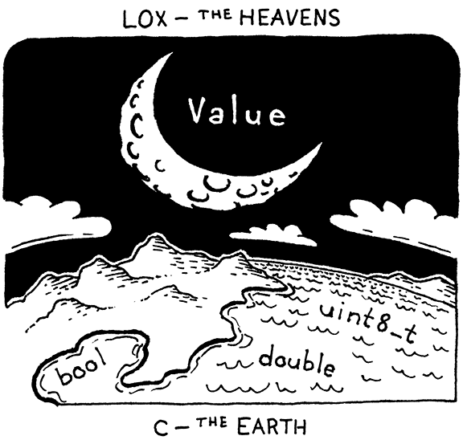

值的类型
当你是一只脑袋很小的熊时，当你思考事物时，有时你会发现一个在你内心看起来很像事物的事物当它公开并让其他人看到它时是完全不同的。
-- A. A. Milne,Winnie-the-Pooh
过去的几章篇幅很大，充满了复杂的技术和一页页的代码。在本章中，只有一个新概念需要学习，并且散布着一些简单明了的代码。你获得了喘息的机会。
Lox 是动态类型的。单个变量可以在不同时间保存布尔值、数字或字符串。到目前，这只是想法。现在，在 clox 中，所有值都是数字。到本章结束时，它还将支持布尔值和nil.虽然这些不是很有趣，但它们迫使我们弄清楚我们的值表示如何动态处理不同的类型。
除了静态类型和动态类型之外还有第三类：unityped。在该范例中，所有变量都具有单一类型，通常是机器寄存器整数。Unityped 语言在今天并不常见，但一些 Forths 和 BCPL（启发 C 的语言）是这样工作的。
截至目前，clox 是统一类型的。
18.1 带标签的 union （Tagged Unions）
在 C 中工作的好处是可以从原始位开始构建数据结构。糟糕的是必须这样做。C 在编译时并没有给你太多免费的东西，在运行时就更少了。就 C 而言，所有的数据是一个无差别的字节数组。由我们决定使用多少字节以及它们的含义。
为了选择值表示，我们需要回答两个关键问题：
-
如何表示值的类型？ 例如，如果您尝试将一个数字乘以
true，需要在运行时检测该错误并报告它。所以，需要知道值的类型是什么。 -
如何存储值本身? 不仅需要能够分辨出3是一个数字，而且需要知道它与数字4不同。我知道，看起来很明显，对吧？但我们的思维水平可以很好地说明这些事情。
由于我们不只是设计这种语言，而是需要自己实现它，因此在回答这两个问题时，我们还必须牢记实现者永恒的追求：高效地完成它。
多年来，语言黑客想出了各种巧妙的方法，将上述信息打包成尽可能少的比特。现在，我们将从最简单、经典的解决方案开始：带标签的 union。值包含两部分：类型“标签”和实际值的有效负载。为了存储值的类型，我们为 VM 支持的每种值定义了一个枚举。
#include "common.h"
typedef enum {
VAL_BOOL,
VAL_NIL,
VAL_NUMBER,
} ValueType;
// typedef double Value;
这里的案例涵盖了 VM 中内置支持的各种值。当我们开始向语言添加类时，用户定义的每个类都不需要在此枚举中有自己的条目。就虚拟机而言，类的每个实例都是同一类型：“实例”。
换句话说，这是 VM 的“类型”概念，而不是用户的。
目前，我们只有几个ValueType，但随着向 clox 添加字符串、函数和类，ValueType会越来越多。除了类型之外，我们还需要存储值的数据——数字double或true布尔false值。我们可以为每种可能的类型定义一个包含字段的结构。

但这是浪费内存。一个值不能同时是数字和布尔值。因此在任何时间点，只会使用其中一个字段。C 允许您通过定义union来优化它。联合看起来像一个结构，除了它的所有字段在内存中重叠。
如果您熟悉 ML 家族中的语言，C 中的结构和联合大致反映了乘积和求和类型之间、元组和代数数据类型之间的区别。
Union的大小是其最大字段的大小。由于这些字段都重复使用相同的位，因此在使用它们时必须非常小心。如果您使用一个字段存储数据，然后使用另一个字段访问它，您将重新解释底层位的含义。
使用联合将位解释为不同类型是 C 的精髓。它开启了许多巧妙的优化，并允许您以内存安全语言不允许的方式对内存的每个字节进行切片和切块。但它也非常不安全，如果你不小心，它会很高兴地把你的手指锯掉。
正如名称“tagged union”所暗示的那样，我们的新值表示将这两个部分组合到一个结构中。
} ValueType;
typedef struct {
ValueType type;
union {
bool boolean;
double number;
} as;
} Value;
typedef struct {
// value.h, add after enum ValueType, replace 1 line
Value中有一个type字段，然后是包含所有基础值的union的第二个字段。在具有典型 C 编译器的 64 位机器上，布局如下所示：
一位聪明的语言黑客给了我使用“as”作为联合字段名称的想法，因为当您提取各种值时，它读起来很好，几乎就像一个强制转换。

四字节type tag在前，然后是union。大多数架构更喜欢将值与其大小对齐。由于联合字段包含一个八字节双精度数，因此编译器在类型字段后添加四个字节的填充，以将该双精度数保持在最近的八字节边界上。这意味着我们实际上在类型tag上花费了 8 个字节，它只需要表示 0 到 3 之间的数字。我们可以将枚举填充到更小的大小，但所做的只是增加对齐填充(padding)。
我们可以在 union之后移动 tag 字段，但这也无济于事。每当我们创建一个 Values 数组时——这是我们对 Values 的大部分内存使用的地方——C编译器将在每个 Value之间插入相同的填充以保持双精度对齐。
所以我们的Values是16个字节，看起来有点大。我们稍后会改进它。与此同时，它们仍然足够小，可以存储在 C 堆栈中并按值传递。Lox 的语义允许这样做，因为到目前为止我们支持的唯一类型是不可变的。如果我们将包含数字 3 的 Value 的副本传递给某个函数，就不必担心调用者会看到对该值的修改。你不能“修改”3。它永远是3。
18.2 Lox 值和 C 值
这是我们新的值表示，但还没有完成。现在，clox 的其余部分假定 Value 是double的别名。我们有代码可以直接从一个 C 转换到另一个。该代码现在已全部不能用了。好悲催。
使用新的表示形式，一个值可以包含一个双精度值，但它不等同于它。从一个到另一个有一个强制性的转换步骤。需要检查代码并插入这些转换以使 clox 再次工作。
我们将把这些转换实现为一些宏，每个宏对应一种类型和操作。首先，将原生 C 值提升为 clox 值：
} Value;
#define BOOL_VAL(value) ((Value){VAL_BOOL, {.boolean = value}})
#define NIL_VAL ((Value){VAL_NIL, {.number = 0}})
#define NUMBER_VAL(value) ((Value){VAL_NUMBER, {.number = value}})
typedef struct {
// value.h, add after struct Value
其中每一个都采用适当类型的 C 值，并生成具有正确type tag并包含基础值的值。这将静态类型的值提升到 clox 的动态类型的宇宙中。但是，为了对 Value做任何事情，我们需要将其解包并取回 C 值。
} Value;
#define AS_BOOL(value) ((value).as.boolean)
#define AS_NUMBER(value) ((value).as.number)
#define BOOL_VAL(value) ((Value){VAL_BOOL, {.boolean = value}})
// value.h, add after struct Value
没有
AS_NIL宏，因为只有一个nil值，所以类型为 ValueVAL_NIL不携带任何额外数据。
这些宏的方向相反。给定一个正确类型的值，他们将其解包并返回相应的原始 C 值。“正确类型”部分很重要！这些宏直接访问联合字段。如果我们要做类似的事情：
Value value = BOOL_VAL(true);
double number = AS_NUMBER(value);
然后我们就可以打开一个通向影子王国的穿梭门。除非知道值包含适当的类型，否则使用任何AS_宏都是不安全的。为此，我们定义了几个宏来检查值的类型。
} Value;
#define IS_BOOL(value) ((value).type == VAL_BOOL)
#define IS_NIL(value) ((value).type == VAL_NIL)
#define IS_NUMBER(value) ((value).type == VAL_NUMBER)
#define AS_BOOL(value) ((value).as.boolean)
// value.h, add after struct Value
如果 Value 具有该类型，则这些宏返回true。任何时候我们调用其中一个AS_宏，都需要首先调用其中一个IS__宏来保证它是正确类型。有了这八个宏，现在可以安全地在 Lox 的动态世界和 C 的静态世界之间穿梭数据。

_VAL宏将C 值提升到天堂。AS_宏将其恢复。
18.3 动态类型的数字
已经有了值表示和转换它的工具。让 clox 再次运行所剩下的就是仔细研究代码并修复数据跨过该边界的每个地方。这是本书中并不完全令人兴奋的部分之一，但我保证我会向您展示每一行代码，现在开始吧。
我们创建的第一个值是编译数字时生成的常量。将词素转换为 C double 后，我们只需将其包装在一个 Value 中，然后再将其存储在常量表中。
double value = strtod(parser.previous.start, NULL);
emitConstant(NUMBER_VAL(value));
}
// compiler.c, in number(), replace 1 line
在运行时，我们有一个打印值的函数。
void printValue(Value value) {
printf("%g", AS_NUMBER(value));
}
// value.c, in printValue(), replace 1 line
就在我们将值发送到printf()之前，解包并提取双精度值。我们将很快重新访问此函数以添加其他类型，但让我们先让现有代码运行。
18.3.1 一元取反和运行时错误
下一个最简单的操作是一元取反。它从堆栈中弹出一个值，取反，然后压入结果。现在我们有了其他类型的值，我们不能再假设操作数是数字了。用户也可以这样做：
print -false; // Uh...
我们需要优雅地处理它，这意味着是时候出现运行时错误了。在执行需要特定类型的操作之前，我们需要确保 Value是该类型。
对于一元取反，检查如下所示：
case OP_DIVIDE: BINARY_OP(/); break;
case OP_NEGATE:
if (!IS_NUMBER(peek(0))) {
runtimeError("Operand must be a number.");
return INTERPRET_RUNTIME_ERROR;
}
push(NUMBER_VAL(-AS_NUMBER(pop())));
break;
case OP_RETURN: {
// vm.c, in run(), replace 1 line
首先，我们检查堆栈顶部的值是否为数字。如果不是，报告运行时错误并停止解释器。否则，接着执行。只有在这个验证之后，才会打开操作数，取反，包装结果并push它。
Lox 的错误处理方法相当...备用。所有错误都是致命错误并立即停止解释器。用户代码无法从错误中恢复。如果 Lox 是一种真正的语言，这是我首先要补救的事情之一。
为了访问值，我们使用了一个新的小函数。
static Value peek(int distance) {
return vm.stackTop[-1 - distance];
}
// vm.c, add after pop()
它从堆栈返回一个值但不弹出它。参数distance是从堆栈顶部向下看多远：0 是顶部，1 是向下一个槽，等等。
为什么不弹出操作数然后验证它呢？我们可以做到。在后面的章节中，重要的是将操作数留在堆栈中，以确保如果在操作中间触发收集，垃圾收集器可以找到它们。我在这里做同样的事情主要是出于习惯。
我们使用一个新函数报告运行时错误，我们将从本书的其余部分中受益匪浅。
static void runtimeError(const char* format, ...) {
va_list args;
va_start(args, format);
vfprintf(stderr, format, args);
va_end(args);
fputs("\n", stderr);
size_t instruction = vm.ip - vm.chunk->code - 1;
int line = vm.chunk->lines[instruction];
fprintf(stderr, "[line %d] in script\n", line);
resetStack();
}
// vm.c, add after resetStack()
你之前肯定在 C 中调用过可变参数函数——那些接受不同数量参数的函数：printf()是一个。但是您可能没有定义过自己的。这本书不是 C教程，所以我会在这里略过，但基本上...和va_list东西让我们可以将任意数量的参数传递给runtimeError().它将那些参数转发到vfprintf()，这是printf()需要显式va_list基本风格.
如果您正在寻找 C 教程，我喜欢The C Programming Language，通常称为“K&R”以纪念其作者。它不完全是最新的，但写作的质量足以弥补它。
调用者可以将格式字符串传递给runtimeError()后跟多个参数，就像printf()直接调用时一样。然后runtimeError()格式化并打印这些参数。我们不会在本章中利用它，但后面的章节将生成包含其他数据的格式化运行时错误消息。
在我们希望显示有用的错误消息后，告诉用户错误发生时正在执行他们的代码的哪一行。由于我们在编译器中留下了token，因此我们在编译到块中的调试信息中查找该行。如果编译器正确完成了它的工作，那么它对应于从中编译字节码的源代码行。
我们使用当前字节码指令索引减一来查看块的调试行数组。那是因为解释器在执行每条指令之前先通过了它。所以，在我们调用的那一点，runtimeError()失败的指令就是前一条指令。
仅显示发生错误的直接行并不能提供太多上下文。最好是完整的堆栈跟踪。但是我们甚至还没有函数可以调用，所以没有调用堆栈可以跟踪。
为了使用va_list和处理它的宏，我们需要引入一个标准的头文件。
#include <stdarg.h>
#include <stdio.h>
// vm.c, add to top of file
有了这个，我们的 VM 不仅可以在我们取反数字时做正确的事情（就像我们破坏它之前那样），而且它还可以优雅地处理错误的尝试来取反其他类型（我们还没有，但仍然） .
18.3.2 二元算术运算符
我们现在有了运行时错误机制，因此修复二元运算符更容易，虽然它们更复杂。我们目前支持四种二元运算符：+、-、*和/。它们之间的唯一区别是它们使用哪个底层 C 运算符。为了最大限度地减少四个运算符之间的冗余代码，我们将通用性封装在一个将运算符token作为参数的大型预处理器宏中。
那个宏在几章前看起来有点矫枉过正，但今天我们从中受益。它让我们可以在一个地方添加必要的类型检查和转换。
#define READ_CONSTANT() (vm.chunk->constants.values[READ_BYTE()])
#define BINARY_OP(valueType, op) \
do { \
if (!IS_NUMBER(peek(0)) || !IS_NUMBER(peek(1))) { \
runtimeError("Operands must be numbers."); \
return INTERPRET_RUNTIME_ERROR; \
} \
double b = AS_NUMBER(pop()); \
double a = AS_NUMBER(pop()); \
push(valueType(a op b)); \
} while (false)
for (;;) {
// vm.c, in run(), replace 6 lines
是的，我意识到那是个很大的宏。这不是我通常认为的良好 C 实践，但让我们开始吧。这些更改类似于我们对一元取反所做的更改。首先，我们检查两个操作数是否都是数字。如果两者都不是，我们会报告运行时错误并拉动弹射座椅杆。
如果操作数没问题，将它们都pop并解包。然后应用给定的运算符，包装结果，并将其push堆栈。注意，我们不会直接使用NUMBER_VAL().相反，要使用的包装器作为宏参数传入。对于我们现有的算术运算符，结果是一个数字，所以我们传入NUMBER_VAL宏。
您知道可以将宏作为参数传递给宏吗？你现在办到了！
}
case OP_ADD: BINARY_OP(NUMBER_VAL, +); break;
case OP_SUBTRACT: BINARY_OP(NUMBER_VAL, -); break;
case OP_MULTIPLY: BINARY_OP(NUMBER_VAL, *); break;
case OP_DIVIDE: BINARY_OP(NUMBER_VAL, /); break;
case OP_NEGATE:
// vm.c, in run(), replace 4 lines
很快，我将向您展示为什么将包装宏作为参数。
18.4 两种新类型
我们所有现有的 clox 代码都恢复正常工作。最后，是时候添加一些新类型了。我们有一个可以运行的数字计算器，它现在可以执行一些毫无意义的偏执运行时类型检查。我们可以在内部表示其他类型，但用户的程序无法创建其中一种类型的值。
现在，就是这样。我们将从添加对三个字面值的编译器支持开始：true、false和nil。它们都很简单，所以将在一个批次中完成所有三个。
对于数字，我们必须处理存在数十亿种可能数值的事实。我们通过将字面值存储在块的常量表中并发出一条简单地加载该常量的字节码指令来解决这个问题。我们可以为新类型做同样的事情。我们会在常量表中存储，比方说true，并使用 anOP_CONSTANT将其读出。
但是考虑到这些新类型实际上（嘿）只有三个可能的值我们需要关心，这是没有必要的——而且很慢！——在它们上面浪费一条两字节的指令和一个常量表条目。相反，我们将定义三个专用指令来将这些字面值中的每一个压入堆栈。
我不是在开玩笑说某些常量值的专用操作会更快。字节码 VM 花费大部分执行时间来读取和解码指令。对于给定的行为，你需要的指令越少、越简单，它就会越快。专用于常见操作的简短指令是经典的优化。
例如，Java 字节码指令集有专门的指令用于加载 0.0、1.0、2.0 和从 -1 到 5 的整数值。（鉴于大多数成熟的 JVM 现在将字节码 JIT 编译为机器，这最终成为一种残留的优化无论如何执行之前的代码。）
OP_CONSTANT,
OP_NIL,
OP_TRUE,
OP_FALSE,
OP_ADD,
// chunk.h, in enum OpCode
我们的扫描器已经将true、false和nil视为关键字，因此我们可以直接跳到解析器。使用我们基于表的 Pratt 解析器，只需要将解析器函数插入与这些关键字token类型关联的行中。我们将在所有三个插槽中使用相同的函数。这里：
[TOKEN_ELSE] = {NULL, NULL, PREC_NONE},
[TOKEN_FALSE] = {literal, NULL, PREC_NONE},
[TOKEN_FOR] = {NULL, NULL, PREC_NONE},
// compiler.c, replace 1 line
这里：
[TOKEN_THIS] = {NULL, NULL, PREC_NONE},
[TOKEN_TRUE] = {literal, NULL, PREC_NONE},
[TOKEN_VAR] = {NULL, NULL, PREC_NONE},
// compiler.c, replace 1 line
和这里：
[TOKEN_IF] = {NULL, NULL, PREC_NONE},
[TOKEN_NIL] = {literal, NULL, PREC_NONE},
[TOKEN_OR] = {NULL, NULL, PREC_NONE},
// compiler.c, replace 1 line
当解析器在前缀位置遇到false,nil, 或true, 时，它会调用这个新的解析器函数：
static void literal() {
switch (parser.previous.type) {
case TOKEN_FALSE: emitByte(OP_FALSE); break;
case TOKEN_NIL: emitByte(OP_NIL); break;
case TOKEN_TRUE: emitByte(OP_TRUE); break;
default: return; // Unreachable.
}
}
// compiler.c, add after binary()
既然parsePrecedence()已经消费了关键字token，那么我们需要做的就是输出正确的指令。我们根据解析的token类型来计算。前端现在可以将 Boolean 和 nil 字面值编译为字节码。沿着执行管道向下移动，我们到达解释器。
我们本可以为每个文字使用单独的解析器函数，并为自己节省一个开关，但对我来说，这感觉不必要地冗长。我认为这主要是品味问题。
case OP_CONSTANT: {
Value constant = READ_CONSTANT();
push(constant);
break;
}
case OP_NIL: push(NIL_VAL); break;
case OP_TRUE: push(BOOL_VAL(true)); break;
case OP_FALSE: push(BOOL_VAL(false)); break;
case OP_ADD: BINARY_OP(NUMBER_VAL, +); break;
// vm.c, in run()
这很容易明白。每条指令都会调用适当的值并将其压入堆栈。我们也不应该忘记反汇编程序。
case OP_CONSTANT:
return constantInstruction("OP_CONSTANT", chunk, offset);
case OP_NIL:
return simpleInstruction("OP_NIL", offset);
case OP_TRUE:
return simpleInstruction("OP_TRUE", offset);
case OP_FALSE:
return simpleInstruction("OP_FALSE", offset);
case OP_ADD:
// debug.c, in disassembleInstruction()
有了这个，我们就可以运行这个惊天动地的程序了：
true
除了当解释器试图打印结果时，它会爆炸。我们也需要扩展printValue()以处理新类型：
void printValue(Value value) {
switch (value.type) {
case VAL_BOOL:
printf(AS_BOOL(value) ? "true" : "false");
break;
case VAL_NIL: printf("nil"); break;
case VAL_NUMBER: printf("%g", AS_NUMBER(value)); break;
}
}
// value.c, in printValue(), replace 1 line
现在可以了！现在有了一些新类型。它们还不是很有用。除了字面值之外，您不能对它们做任何事情。还需要一段时间才能发挥作用，但我们可以开始将布尔值用于逻辑运算符。
18.4.1 逻辑非和假
最简单的逻辑运算符是一元取反。
print !true; // "false"
这个新操作得到一个新指令。
OP_DIVIDE,
OP_NOT,
OP_NEGATE,
// chunk.h, in enum OpCode
我们可以重用unary()为一元取反编写的解析器函数来编译一个非表达式。只需要将它放入解析表中即可。
[TOKEN_STAR] = {NULL, binary, PREC_FACTOR},
[TOKEN_BANG] = {unary, NULL, PREC_NONE},
[TOKEN_BANG_EQUAL] = {NULL, NULL, PREC_NONE},
// compiler.c, replace 1 line
因为我知道要这样做，所以该unary()函数已经有一个token类型的switch来确定输出哪个字节码指令。我们只是添加另一个case。
switch (operatorType) {
case TOKEN_BANG: emitByte(OP_NOT); break;
case TOKEN_MINUS: emitByte(OP_NEGATE); break;
default: return; // Unreachable.
}
// compiler.c, in unary()
这就是前端。让我们转到 VM 并将这条指令变为现实。
case OP_DIVIDE: BINARY_OP(NUMBER_VAL, /); break;
case OP_NOT:
push(BOOL_VAL(isFalsey(pop())));
break;
case OP_NEGATE:
// vm.c, in run()
就像我们之前的一元运算符一样，它pop一个操作数，执行操作，然后push结果。而且，正如我们在那里所做的那样，我们不得不担心动态类型。获取true的逻辑非很容易，但是没有什么能阻止不守规矩的程序员写出这样的东西：
print !nil;
对于一元取反，对任何非数字的东西取反将是错误。但是，与大多数脚本语言一样，Lox在涉及布尔值和其他需要布尔值的上下文时更为宽松。处理其他类型的规则称为“falsiness”，我们在这里实现它：
现在我忍不住想弄清楚否定其他类型的值意味着什么。
nil可能是它自己的否定，有点像一个奇怪的伪零。否定一个字符串可以，呃，反转它？
static bool isFalsey(Value value) {
return IS_NIL(value) || (IS_BOOL(value) && !AS_BOOL(value));
}
// vm.c, add after peek()
Lox 在这方面遵循 Ruby，nil和false为假，其他值都是true.我们有一条可以生成的新指令，因此还需要能够在反汇编器中反汇编。
case OP_DIVIDE:
return simpleInstruction("OP_DIVIDE", offset);
case OP_NOT:
return simpleInstruction("OP_NOT", offset);
case OP_NEGATE:
// debug.c, in disassembleInstruction()
18.4.2 相等和比较运算符
那还不错。让我们继续，并搞定相等和比较运算符：==,!=,<,>,<=, 和>=。这涵盖了除逻辑运算符and和or之外的所有返回布尔结果的运算符。因为那些需要短路（基本上做一点控制流程）我们还没有准备好。
以下是针对这些操作员的新说明：
OP_FALSE,
OP_EQUAL,
OP_GREATER,
OP_LESS,
OP_ADD,
// chunk.h, in enum OpCode
等等，怎么只有三个?怎么没有!=、<=和>=？ 我们也可以为这些创建指令。老实说，如果我们这样做，VM 会执行得更快，所以如果目标是性能，我们应该这样做。
但我的主要目标是教您有关字节码编译器的知识。我希望您开始认识到字节码指令不需要紧跟用户源代码。VM 可以完全自由地使用它想要的任何指令集和代码序列，只要它们具有正确的用户可见行为。
a != b该表达式与 !(a == b)具有相同的语义，因此编译器可以像编译后者一样自由地编译前者。代替专用OP_NOT_EQUAL指令，它可以输出一个OP_EQUAL后跟一个OP_NOT.同样，a <= b与!(a > b)相同，a >= b与!(a < b)相同。因此，我们只需要三个新指令。
a <= b总是与!(a > b)一样吗？根据IEEE 754，当操作数为 NaN 时，所有比较运算符都返回 false。那意味着NaN <= 1是假的，NaN > 1也是假的。但是我们的脱糖假设后者始终是前者的否定。对于这本书，我们不会太关注这些，但这些细节在您的真实语言实现中很重要。
不过，在解析器中，我们确实有六个新的运算符可以放入解析表中。我们使用与之前相同的解析器函数binary()。这是!=的行：
[TOKEN_BANG] = {unary, NULL, PREC_NONE},
[TOKEN_BANG_EQUAL] = {NULL, binary, PREC_EQUALITY},
[TOKEN_EQUAL] = {NULL, NULL, PREC_NONE},
// compiler.c, replace 1 line
其余五名操作符在后边。
[TOKEN_EQUAL] = {NULL, NULL, PREC_NONE},
[TOKEN_EQUAL_EQUAL] = {NULL, binary, PREC_EQUALITY},
[TOKEN_GREATER] = {NULL, binary, PREC_COMPARISON},
[TOKEN_GREATER_EQUAL] = {NULL, binary, PREC_COMPARISON},
[TOKEN_LESS] = {NULL, binary, PREC_COMPARISON},
[TOKEN_LESS_EQUAL] = {NULL, binary, PREC_COMPARISON},
[TOKEN_IDENTIFIER] = {NULL, NULL, PREC_NONE},
// compiler.c, replace 5 lines
在binary()内部，我们已经有一个switch可以为每种token类型生成正确的字节码。我们为六个操作符添加了case。
switch (operatorType) {
case TOKEN_BANG_EQUAL: emitBytes(OP_EQUAL, OP_NOT); break;
case TOKEN_EQUAL_EQUAL: emitByte(OP_EQUAL); break;
case TOKEN_GREATER: emitByte(OP_GREATER); break;
case TOKEN_GREATER_EQUAL: emitBytes(OP_LESS, OP_NOT); break;
case TOKEN_LESS: emitByte(OP_LESS); break;
case TOKEN_LESS_EQUAL: emitBytes(OP_GREATER, OP_NOT); break;
case TOKEN_PLUS: emitByte(OP_ADD); break;
// compiler.c, in binary()
==,<和>运算符输出一条指令。其他输出一对指令，一个用于评估逆运算，然后一个OP_NOT对结果取反。六个操作符只需要三个指令！
这意味着在 VM 中，我们的工作更简单。相等是最一般的操作。
case OP_FALSE: push(BOOL_VAL(false)); break;
case OP_EQUAL: {
Value b = pop();
Value a = pop();
push(BOOL_VAL(valuesEqual(a, b)));
break;
}
case OP_ADD: BINARY_OP(NUMBER_VAL, +); break;
// vm.c, in run()
您可以用==评估任何一对对象，甚至是不同类型的对象。这比较复杂，所以将逻辑分流到一个单独的函数是有意义的。该函数总是返回一个 C bool，所以我们可以安全地将结果包装在一个BOOL_VAL.该函数与 Values 相关，因此它存在于“value”模块中。
} ValueArray;
bool valuesEqual(Value a, Value b);
void initValueArray(ValueArray* array);
// value.h, add after struct ValueArray
这是实现：
bool valuesEqual(Value a, Value b) {
if (a.type != b.type) return false;
switch (a.type) {
case VAL_BOOL: return AS_BOOL(a) == AS_BOOL(b);
case VAL_NIL: return true;
case VAL_NUMBER: return AS_NUMBER(a) == AS_NUMBER(b);
default: return false; // Unreachable.
}
}
// value.c, add after printValue()
首先，我们检查类型。如果 Values 有不同的类型，它们肯定是不相等的。否则，我们解包两个值并直接比较它们。
某些语言具有“隐式转换”，其中如果一个可以转换为另一个类型，则不同类型的值可能被认为是相等的。例如，数字 0 等同于 JavaScript 中的字符串“0”。这种松散是一个足够大的痛苦来源，以至于 JS 添加了一个单独的“严格相等”运算符，
===.PHP 认为字符串“1”和“01”是等价的，因为它们都可以转换为等价的数字，尽管最终的原因是因为 PHP 是由 Lovecraftian eldritch god 设计来摧毁思想的。
大多数具有独立整数和浮点数类型的动态类型语言认为，如果数值相同（例如，1.0 等于 1），则不同数字类型的值相等.
对于每个值类型，我们都有一个单独的case来处理比较值本身。考虑到case的相似程度，您可能想知道为什么我们不能简单地memcmp()使用两个 Value 结构并完成它。问题是由于填充和不同大小的联合字段，值包含未使用的位。C 不保证其中的内容，因此两个相等的值可能在未使用的内存中实际上不同。
（你不会相信在得知这个事实之前我经历了多少痛苦。）
无论如何，随着我们向 clox 添加更多类型，此函数将增加新的case。目前，这三个就足够了。其他比较运算符更容易，因为它们仅适用于数字
push(BOOL_VAL(valuesEqual(a, b)));
break;
}
case OP_GREATER: BINARY_OP(BOOL_VAL, >); break;
case OP_LESS: BINARY_OP(BOOL_VAL, <); break;
case OP_ADD: BINARY_OP(NUMBER_VAL, +); break;
// vm.c, in run()
我们已经扩展了BINARY_OP宏来处理返回非数字类型的运算符。现在我们开始使用它。我们传入是BOOL_VAL因为结果值类型是布尔值。否则，它与加号或减号没有区别。
一如既往，今天咏叹调的结尾是反编译新指令。
case OP_FALSE:
return simpleInstruction("OP_FALSE", offset);
case OP_EQUAL:
return simpleInstruction("OP_EQUAL", offset);
case OP_GREATER:
return simpleInstruction("OP_GREATER", offset);
case OP_LESS:
return simpleInstruction("OP_LESS", offset);
case OP_ADD:
// debug.c, in disassembleInstruction()
这样，我们的数值计算器就更接近于通用表达式求值器了。启动 clox 并输入：
!(5 - 4 > 3 * 2 == !nil)
好吧，我承认这可能不是最有用的表达方式，但我们正在取得进展。我们缺少一种具有自己的字符形式的内置类型：字符串。这些要复杂得多，因为字符串的大小可能不同。事实证明，这种微小的差异会产生如此巨大的影响，以至于我们为字符串单独写了一章。
挑战
-
我们可以更进一步地减少二元运算符。您还可以删除哪些其他指令，编译器将如何处理它们的缺失？
-
相反，我们可以通过添加与更高级别操作相对应的更具体的指令来提高字节码 VM 的速度。你会定义什么指令来加速我们在本章中添加支持的那种用户代码？